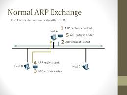

Normal ARP (Address Resolution Protocol), IP adreslerini MAC adreslerine çevirmek için kullanılan temel ARP çeşididir. Bir cihaz, aynı ağdaki başka bir cihazın MAC adresini öğrenmek istediğinde ARP Request gönderir ve hedef cihazdan ARP Reply alarak iletişime geçer.
ARP Request (İstek Gönderme):
Bir cihaz, belirli bir IP adresine sahip bir cihazla iletişim kurmak istediğinde, onun MAC adresini öğrenmesi gerekir.
Ağdaki tüm cihazlara (broadcast) bir ARP isteği gönderir:
"Bu IP adresine sahip cihazın MAC adresi nedir?"
Hedef cihaz, kendi MAC adresini içeren bir ARP yanıtı gönderir.
Bu yanıt yalnızca isteği gönderen cihaza ulaşır (unicast).
Önbelleğe Kaydetme:
Cihaz, aldığı MAC adresini kendi ARP önbelleğine kaydeder. Böylece, aynı cihaza tekrar veri göndermesi gerektiğinde yeniden ARP sorgusu yapmasına gerek kalmaz.
Ana Sayfaya Dön